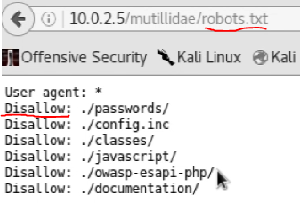

robots.txt
robots.txt aslında web site adminlerinin “./password/, ./config/” vb gibi public olarak görünmesini istenmeyen dosyalarını, google tarafından indexlenmemesini istedikleri dosyaları tuttuğu yerdir. Normalde web sitesinin google tarafından indexlenip arama sonucunda çıkması istenir fakat tabi ki “./password/, ./config/” vb gibi dosyaların indexlenmesi güvenlik açığı oluşturacağından bunu site yöneticileri istemezler o nedenle robots.txt içine saklarlar ve google bunu indexlemesin diye “Dissallow” ederler. Örnek olarak;
 gibi.